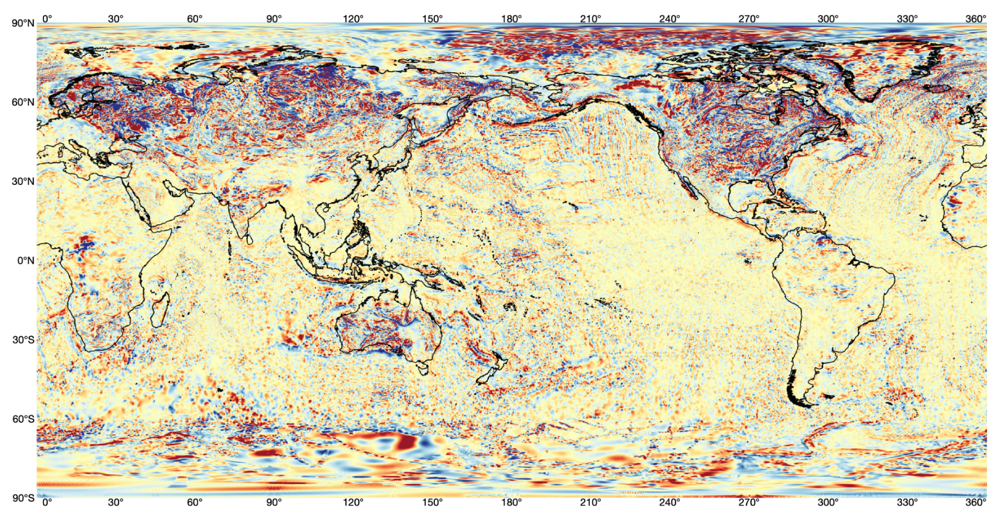
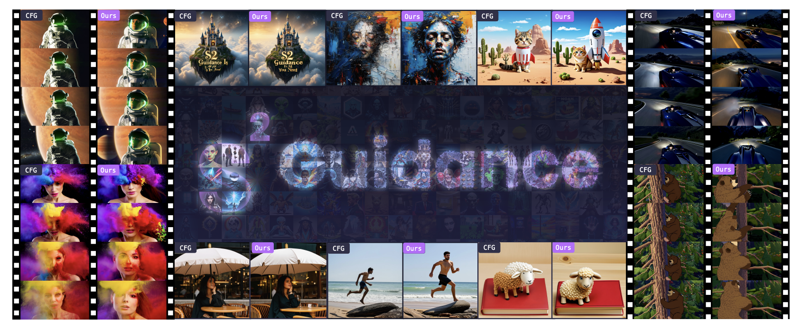
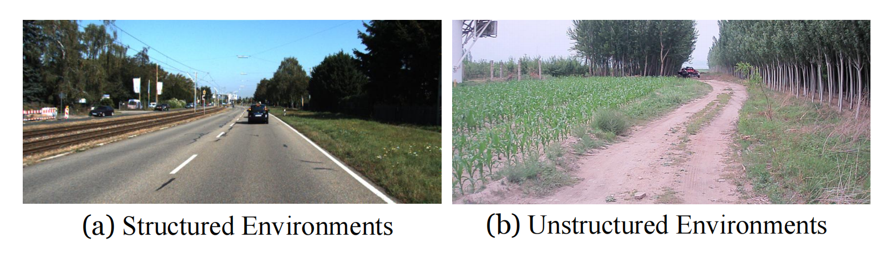
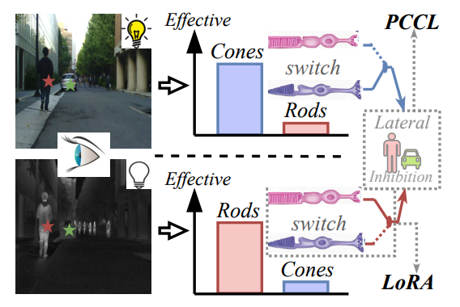

|
Fangyuan MAO I am currently a master student at Institute of Computeing Technology, Chinese Academy of Sciences, supervised by Yu Hu and Jilin Mei. I obtained a bachelor's degree from Zhejiang University. I am fortunate to have research experiences at ANS@CASICT, Kling@Kuaishou, AMAP@Alibaba, VIPA@ZJU. I believe math and physics are the answers to artificial intelligence. I am trying to integrate more math knowledge with my research. My interests includes generative model, computer vision. Email: maofangyuan23s[at]ict[dot]ac[dot]cn, fangyuanmaocs[at]gmail[dot]com |

|
Education
|
Internship
|
Selected Publication* indicates equal contribution. |

|
Omni-Effects: Unified and Spatially-Controllable Visual Effects Generation
Fangyuan Mao*, Aiming Hao*, Jintao Chen, Dongxia Liu, Xiaokun Feng, Jiashu Zhu, Meiqi Wu, Chubin Chen, Jiahong Wu, Xiangxiang Chu AAAI, 2026 paper / project page / code / dataset Unified and spatially-controlable visual effects generation pipeline. Omni-Effects supports prompt-guided and SAP-guided Multi-VFX. |
|
|
PID: Physics-Informed Diffusion Model for Infrared Image Generation
Fangyuan Mao, Jilin Mei, Shun Lu, Fuyang Liu, Liang Chen, Fangzhou Zhao, Yu Hu Pattern Recognition, 2025 paper / code |
|

|
Recovering Missing Regions of Earth Magnetic Anomaly Grid data (EMAG2) Using RePaint based on Diffusion Model
Fangyuan Mao, Bo Yang, Shenyao Jin Big Data and Earth System, 2025 paper / code |
|
|
Disassembling Convolutional Segmentation Network
Kaiwen Hu, Jing Gao, Fangyuan Mao, Xinhui Song, Lechao Cheng, Zunlei Feng, Mingli Song International Journal of Computer Vision, 2023 paper |

|
CORENet: Cross-Modal 4D Radar Denoising Network with LiDAR Supervision for Autonomous Driving
Fuyang Liu, Jilin Mei, Fangyuan Mao, Yu Hu, Chen Min, Yan Xing Intelligent Robots and Systems, 2025 paper / code |

|
ImagerySearch: Adaptive Test-Time Search for Video Generation Beyond Semantic Dependency Constraints
Meiqi Wu, Jiashu Zhu, Xiaokun Feng, Chubin Chen, Chen Zhu, Bingze Song, Fangyuan Mao, Jiahong Wu, Xiangxiang Chu, Kaiqi Huang AAAI, 2026 paper / code |
|

|
$S^2$-Guidance: Stochastic Self Guidance for Training-Free Enhancement of Diffusion Models
Chubin Chen, Jiashu Zhu, Xiaokun Feng, Nisha Huang, Meiqi Wu, Fangyuan Mao, Jiahong Wu, Xiangxiang Chu, Xiu Li ICLR, 2026 paper / project page / code |

|
Advancing Off-Road Autonomous Driving: The Large-Scale ORAD-3D Dataset and Comprehensive Benchmarks
Chen Min, Jilin Mei, Heng Zhai, Shuai Wang, Tong Sun, Fanjie Kong, Haoyang Li, Fangyuan Mao, Fuyang Liu, Shuo Wang, Yiming Nie, Qi Zhu, Liang Xiao, Dawei Zhao, Yu Hu ICRA, 2026 paper / code |
|

|
Autonomous Driving in Unstructured Environments: How Far Have We Come?
Chen Min, Shubin Si, Xu Wang, Hanzhang Xue, Weizhong Jiang, Yang Liu, Juan Wang, Qingtian Zhu, Qi Zhu, Lun Luo, Fanjie Kong, Jinyu Miao, Xudong Cai, Shuai An, Wei Li, Jilin Mei, Tong Sun, Heng Zhai, Qifeng Liu, Fangzhou Zhao, Liang Chen, Shuai Wang, Erke Shang, Linzhi Shang, Kunlong Zhao, Fuyang Li, Hao Fu, Lei Jin, Jian Zhao, Fangyuan Mao, Zhipeng Xiao, Chengyang Li, Bin Dai, Dawei Zhao, Liang Xiao, Yiming Nie, Yu Hu, Xuelong Li JRF, 2025 paper |
Preprints |
|

|
UNIV: Unified Foundation Model for Infrared and Visible Modalities
Fangyuan Mao*, Shuo Wang*, Jilin Mei, Shun Lu, Chen Min, Fuyang Liu, Xiaokun Feng, Meiqi Wu, Yu Hu Arxiv, 2025 paper / code |

|
MIGA: Make Train-Free Infinite Frame Generation Great Again for Consistent Long Videos
Xiaokun Feng, Jiashu Zhu, Meiqi Wu, Chubin Chen, Fangyuan Mao, Haiyang Guo, Jiahong Wu, Xiangxiang Chu, Kaiqi Huang |

|
SEA: Hierarchically Searching Efficient Adapters for Pre-trained Models
Shun Lu, Fangyuan Mao, Longxing Yang, Zihao Sun, Jilin Mei, Jianchao Tan, Chengru Song, Yu Hu Neural Network under review |